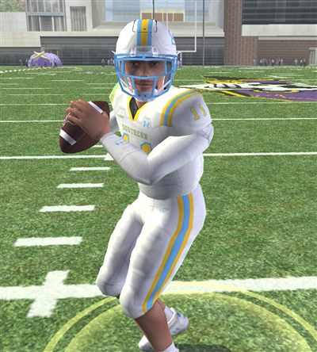
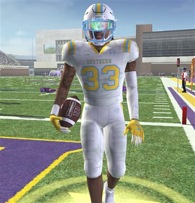
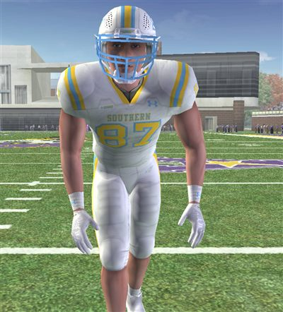

This page tracks the season one episode at a time — a new row goes into the table and a new section gets added to the narrative as each video actually releases, so it's never ahead of the channel. Through six weeks, Southern is 4–2 and 3–1 in AAC play. The response at ECU was about as clean an answer as the offense could have given after USF; the first-ever meeting with Louisiana was a much rougher one, decided in overtime at home.
In This Report
- The Season So Far
- Foxworth Hits A Wall
- Molinich's Workload
- The Defense: The Question Got Answered
- Foxworth Answers Back At ECU
- Molinich's Four-Touchdown Day
- The Defense Responds Too
- Foxworth's Rough Night In Overtime
- Gavin Hoffman's Big Moment
- A First-Ever Meeting Decided In OT
- What's Ahead
- Storylines To Watch
- The Takeaway
The Season So Far
| Wk | Opponent | Score | Result |
|---|---|---|---|
| 1 | vs Kentucky | 48–17 | Win ▶ Watch The Episode |
| 2 | vs North Texas | 31–7 | Win ▶ Watch The Episode |
| 3 | at Army | 44–12 | Win ▶ Watch The Episode |
| 4 | at USF | 23–45 | Loss ▶ Watch The Episode |
| 5 | at ECU | 42–19 | Win ▶ Watch The Episode |
| 6 | vs Louisiana | 21–28 OT | Loss ▶ Watch The Episode |
| 7 | at No. 10 Texas | — | ▶ Watch The Episode |
| 8 | at Navy | — | |
| 9 | Bye | ||
| 10 | at Temple | — | |
| 11 | vs UAB | — | |
| 12 | vs Memphis | — | |
| 13 | vs UTSA | — | |
The first three games were a combined 123–36. USF was a different story from the opening snap — a reigning AAC champion that made Southern look like a team playing its first real road test of the year for the second week in a row, and this time the result matched the difficulty. ECU, a week later, was the opposite kind of week entirely. Louisiana, in the first-ever meeting between these two programs, went the other way again — a home loss in overtime, Southern's second defeat of the season.
Foxworth Hits A Wall

Three weeks of a clean sophomore leap — zero interceptions, eight touchdowns — ran into USF's defense and didn't survive it. Foxworth went 5-of-19 for 107 yards with 2 interceptions before getting pulled in the third quarter, the first real stumble of his season. James Moody came off the bench and was sharper in relief, going 7-of-18 for 165 yards and 2 touchdowns. Nothing was announced right away about who'd start at ECU — for the first time all season, that question was actually open.
There's a strange symmetry to it. The last time these two teams played, in 2027, it was Moody getting benched against ECU and a true freshman named Joseph Foxworth coming off the bench to run the offense for the first time in his career. A season later, against that same opponent, Foxworth was the one walking back to the sideline and Moody was the one finishing the game — and whether this rematch would settle anything the way the last one did was the whole subplot heading into the matchup.
Molinich's Workload

112 rushing yards and 2 touchdowns against Kentucky, 226 and 2 more against North Texas, 222 rushing yards and 3 touchdowns at Army, then 125 more at USF — 685 yards on the ground through four games, plus 72 receiving yards and 3 receiving touchdowns on top of it. The preview's prediction was a decline toward 1,300–1,500 yards on the season as the offense balances out; this pace, if it held, would blow well past that. The one thing USF's defense couldn't take away was the run game — Molinich still got his, even in a loss. ECU didn't take it away either.
The Defense: The Question Got Answered
Three weeks of a defense that hadn't been tested against the run ended with an answer nobody wanted: Southern gave up 276 rushing yards to USF. The preview's biggest question — whether the nine-point ratings jump actually moved this unit out of the national bottom 10 — looks like it didn't, at least not against a real AAC run game. Through three weeks the box scores simply hadn't forced the issue; USF forced it immediately, and the defense didn't hold.
It wasn't a total collapse. Christian Thatcher's 17 tackles and 4 sacks through three games and Ricardo Jones' two interceptions were real positives earlier in the season, and neither got worse at USF — the run defense problem specifically is what showed up. ECU finished 2027 at 5–7, 3–6 in the AAC, a step down from USF's level. Whether that was a chance to patch the problem against lesser competition, or whether it would show up again regardless of opponent, was the question ECU actually answered.
Foxworth Answers Back At ECU
He got the start, and he answered about as emphatically as a quarterback can after a benching: 16-of-19 for 236 yards and 3 touchdowns, zero interceptions, in a 42–19 road win. A season ago it was Moody who got pulled against this same ECU team and a true freshman Foxworth who took the offense and never gave it back. This time Foxworth's the one who needed the response game, and he got it against the same opponent that launched his career in the first place. The "who starts at ECU" question that closed out last week's update didn't stay open long.
Molinich's Four-Touchdown Day
105 rushing yards and 2 touchdowns on the ground, plus 3 catches for 40 yards and 2 more touchdowns through the air — four total touchdowns in one game, his biggest single-game output of the season. Through five weeks he's at 790 rushing yards and 112 receiving yards, 14 total touchdowns, still well ahead of the preseason decline the preview predicted.
The Defense Responds Too
Jaelen McCracken logged 2 sacks and Dre Still picked off a pass — a cleaner defensive week than the USF game, against the lesser competition already noted above, which is exactly the caveat worth keeping in mind. This result alone doesn't answer whether the run-defense problem from USF is actually fixed. It's a real data point in the right direction, not a conclusion.
Foxworth's Rough Night In Overtime
A week after answering the USF benching about as cleanly as possible at ECU, Foxworth ran into a much tougher night at home against Louisiana: 14-of-29 for 239 yards, 1 touchdown, and 2 interceptions in the overtime loss. It's not the same kind of stumble as USF — nobody got pulled this time, and the overall numbers aren't as ugly — but it's the second real rough outing of the season for the sophomore, both of them coming against the two toughest defenses Southern's actually faced so far.
Gavin Hoffman's Big Moment

The preseason's 1st Team All-Conference pick at receiver made his week count on just two targets — 99 yards and a touchdown in an overtime game where every possession mattered. Molinich added 160 rushing yards and a touchdown of his own on the ground, still finding room against a defense that otherwise made Southern work for everything else it got.
A First-Ever Meeting Decided In OT
21–28, Louisiana's first win in the first game these two programs have ever played. A one-score game at the final whistle that needed overtime to settle it — not a blowout either direction, just a game Southern came up a possession short in. It drops the Jaguars to 4–2 on the season, still 3–1 in AAC play since Louisiana was a non-conference date, with a measuring-stick road trip to a ranked opponent waiting immediately after.
What's Ahead
Southern and Texas have never played each other before either — the second first-ever meeting in as many weeks, this time on the road against a ranked opponent, the toughest test on the schedule to date. There's real history on the recruiting trail underneath it: Southern has beaten Texas for three different recruits over the years — Jaetavian Muasau, J.T. Walthall, and Taylon Garner all flipped away from the Longhorns. That subplot got a fresh chapter this week too, with the program landing a commitment from Graham Pierre, a 4-star running back out of Louisiana for the 2029 class — 6'2", 214 pounds, a 4.67 forty, 380 on the bench and 605 on the squat — a name worth tracking well before he ever takes a snap.
Storylines To Watch
The MLB room after Pritchett. Todd Pritchett, the sophomore middle linebacker, tore a shoulder muscle in the USF game and is out for the season — the only serious injury on the roster through six weeks. The depth and inexperience behind him will get tested, right in the middle of a defense that's already been exposed once against a real run game, heading into the back half of the schedule.
Jaelen McCracken's freshman season. A true freshman defensive end already has multi-sack games twice in Southern's first five weeks — 2 against North Texas, 2 more against ECU. That's happening at a position the preview flagged as a question mark. Worth tracking how big a role he's carved out by midseason.
James Moody's crossroads. The backup quarterback outplayed Foxworth in relief at USF — 7-of-18 for 165 yards and 2 touchdowns — and then watched Foxworth answer right back at ECU and reclaim the job cleanly. Moody's shown he can play winning football when called on; whether that's enough to hold his spot as the clear backup, or whether a strong relief outing like that starts a longer conversation about his future here, is worth watching the rest of the way.
Teddy Graves' best start yet, with an asterisk underneath it. 5–7, then 8–6, then 6–6 — three seasons, three different ceilings, and still no real breakout. A 4–2 start through six games is still the best this program has looked under Graves at this point in a season, even after the Louisiana loss. The odd wrinkle: the program's own prestige rating actually dropped heading into this year, on the back of its worst recruiting class finish of the Graves era. A good record and a declining recruiting trajectory pulling in opposite directions is exactly the kind of tension worth watching the rest of the way.
The recruiting trail keeps producing storylines. Darian Weathersby, a defensive end who started his career at Alabama — 6'2", 222 pounds, a 4.69 forty, 435 on the bench and 570 on the squat — transferred in and is already part of the program, the latest reminder that this roster is increasingly being built through more than just high school recruiting. Pair that with the Graham Pierre commitment covered above, and it's two real wins away from the field in the same week this program absorbed a loss on it.
The Takeaway
4–2, 3–1 in AAC play, and the first loss of the season that didn't come against a conference heavyweight — just a tight, first-ever meeting with Louisiana that came down to overtime. Foxworth had his second rough outing of the year, Hoffman delivered the kind of big-target night that makes a receiver's preseason All-Conference nod look earned, and Molinich kept producing regardless of who else struggled. Texas is next, on the road, ranked, and another first-ever meeting — the clearest measuring-stick game of the season so far for a program that's never shared a series with either of its last two opponents.